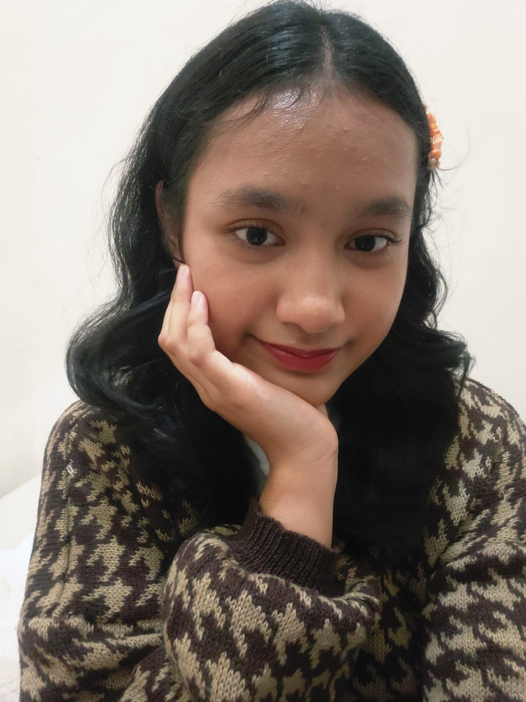
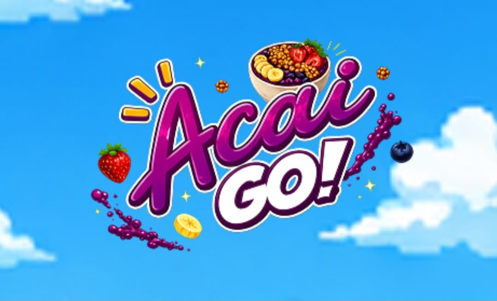
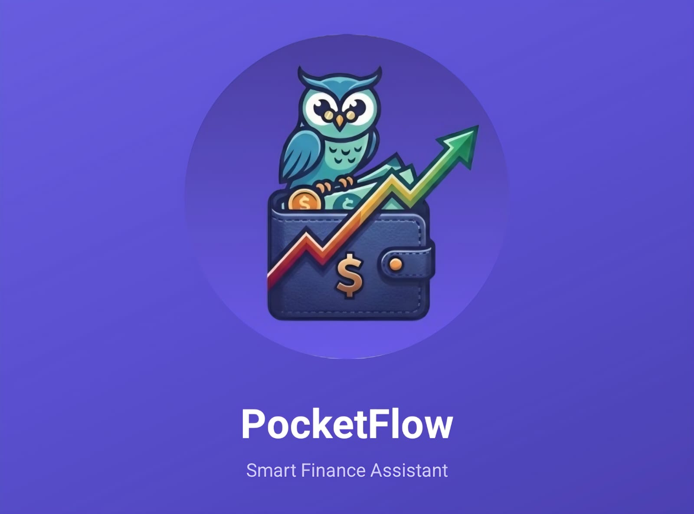

HTML & CSS
Membuat halaman web semantik dan responsif dengan Flexbox, Grid, dan Media Query, salah satunya website portofolio ini.
Mahasiswa jurusan Ilmu Komputer di Universitas Sumatera Utara. Saya memiliki ketertarikan di bidang perangkat lunak, basis data, dan design UI/UX.
Lihat proyek saya
Saya sedang belajar Pemrograman Web dan ingin menjadi pengembang yang memahami fondasi HTML, CSS, dan JavaScript dengan baik. Saya juga senang mempelajari Basis Data. Saya tertarik dalam pengolahan data yang akan memberikan informasi atau laporan dalam pengambilan keputusan. Tujuan saya adalah menjadi seorang Data Analyst.
Membuat halaman web semantik dan responsif dengan Flexbox, Grid, dan Media Query, salah satunya website portofolio ini.
Menulis program dengan OOP, struktur data (array, linked list, stack, queue), dan algoritma dasar pada tugas kuliah.
Tipografi, warna, dan hierarki visual.
Merancang tabel dan relasi, lalu menulis query SELECT, JOIN, dan agregasi untuk mengolah data.

Acai Go! adalah sebuah game dimana karakter game harus menangkap objek makanan dan menghindari objek yang bukan makanan. Game ini menerapkan vektor dalam C++ untuk pergerakan setiap objek yang bergerak.
Rekan yang ikut serta dalam pembuatan proyek ini : Baktiar Purba, Bunga Lestari, Friska Fadilah, dan Meisrik Wahyuni.

PocketFlow adalah sebuah aplikasi asisten keuangan pintar untuk mencatat dan memantau keuangan pribadi.
Rekan yang ikut serta dalam pembuatan proyek ini : Bunga Lestari, Ibnu Ad'ha Hasibuan, dan Meisrik Wahyuni